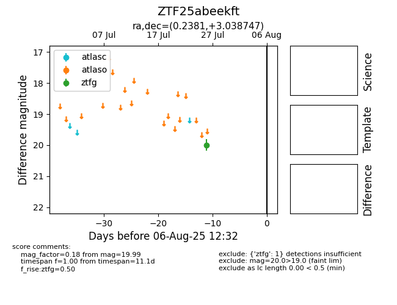

Target ZTF25abeekft at 2025-08-06 17:07, see:
FINK: fink-portal.org/ZTF25abeekft
Lasair: lasair-ztf.lsst.ac.uk/objects/ZTF25abeekft
ALeRCE: alerce.online/object/ZTF25abeekft
alt names
ZTF25abeekft (ztf,fink)
coordinates:
equatorial (ra, dec) = (0.2381,+3.03875)
galactic (l, b) = (98.9941,-57.46770)
photometry
last ztfg=19.99
1 ztfg detections
